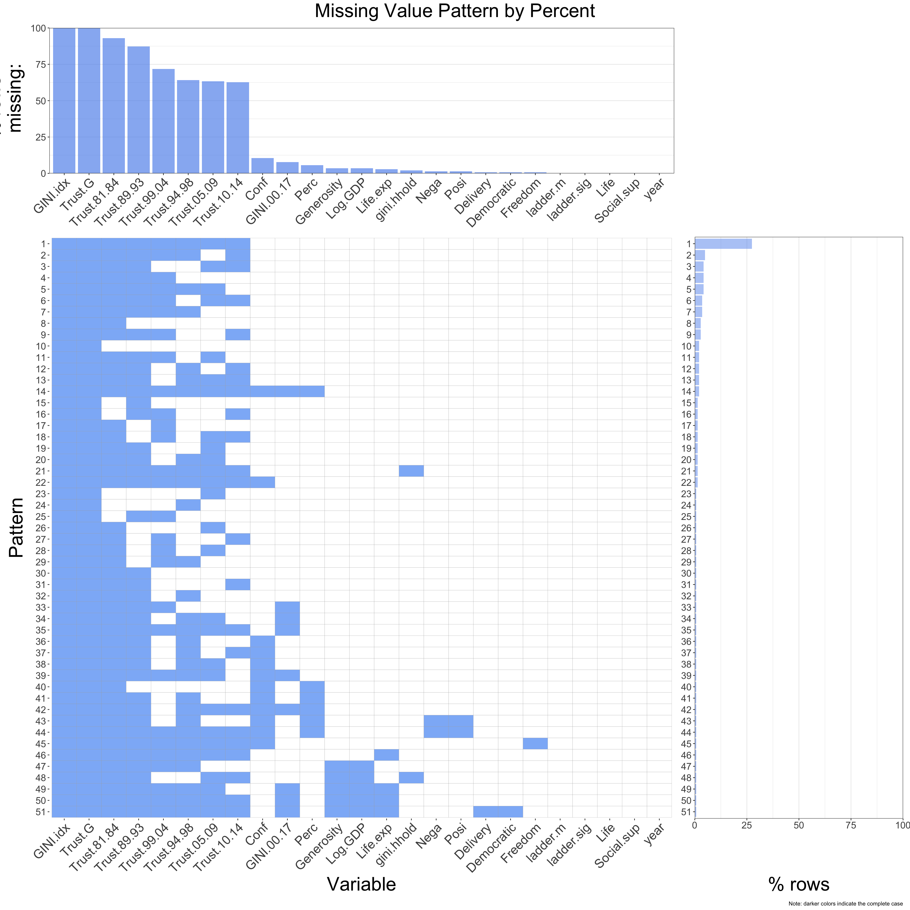
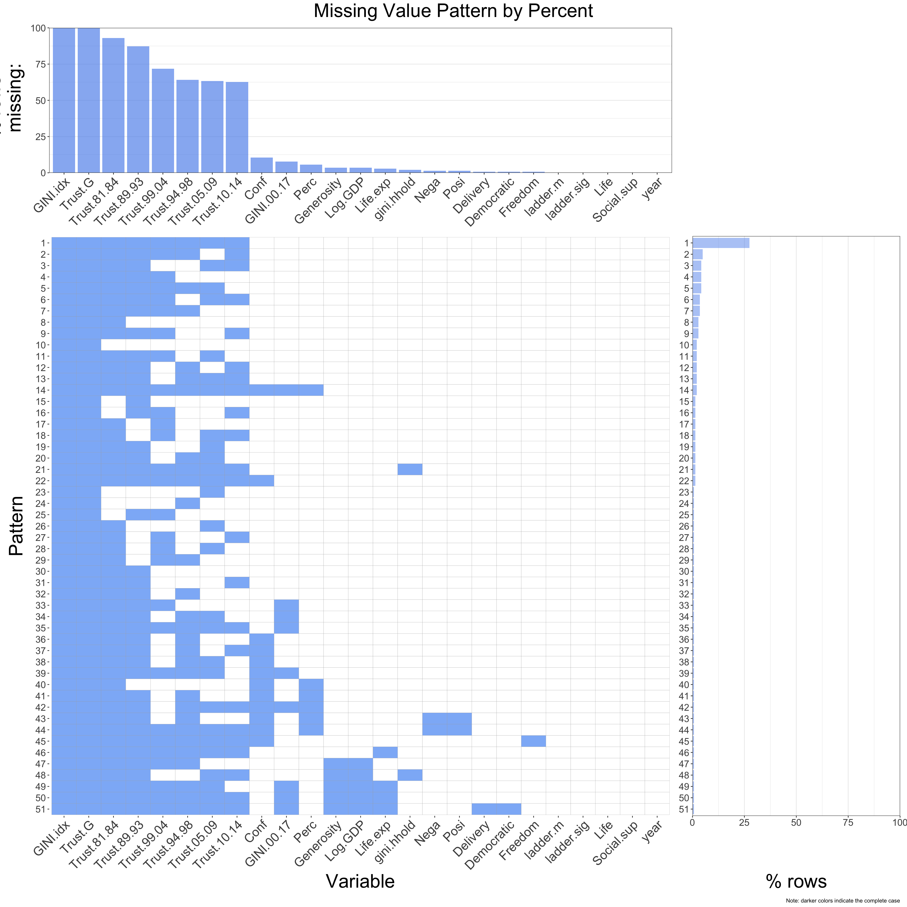

Chapter 4 Missing values
4.1 Load Data
## Number of variables 25 . Num of observations 142We start with a subset of our data, the year 2018, to analyze missing patterns. Notice the data set has 25 variables and 142 observations.
4.2 Explore Missing Patterns
## GINI.idx Trust.G Trust.81.84 Trust.89.93 Trust.99.04 Trust.94.98
## 142 142 132 124 102 91
## Trust.05.09 Trust.10.14 Conf GINI.00.17 Perc Log.GDP
## 90 89 15 11 8 5
## Generosity Life.exp gini.hhold Posi Nega Freedom
## 5 4 3 2 2 1
## Democratic Delivery year Life Social.sup ladder.sig
## 1 1 0 0 0 0
## ladder.m
## 0“Gini index” and “Trust of Gallup” are missing for all observations. It is possible that these columns are placeholders saved for future use.
We notice that a large percentage of observations are missing the “Trust” data (i.e., “Most people can be trusted”). These are survey data collected by GWP and it is noted in our source’s appendix that “this indicator has a limited coverage”, which makes sense since survey data is hard to be gathered all over the world. We also find that the number of missing “Trust” data is decreasing over time. We think this is a sign that with the development of technology, this survey is carried in more countries.
As for “Average Gini between 2000 and 2017”, countries missing this indicator are usually those still in a state of war or instability, such as Afghanistan and Libya. So it is difficult to collect data.
And “Confidence in government” is another survey data from GWP. Missing this variable may be due to political and religious reasons (e.g., China, Libya).
 

We found 51 missing patterns. And from the patterns we observe that:
- The most representative one is the first pattern where all six of “Most People can be trusted” variables, as well as “Gini index” and “Trust of Gallup” are missing. Over 25% of observations are of this pattern.
- It’s clear from the graph that many patterns emerge because of different levels of missing the six “Trust” survey data.
- “Log of GDP” and “Generosity quality” are always missing at the same time.
- For several patterns, “Confidence in government” and “Perception of Corruption” are missing at the same time.
- Another interesting insight is that there is no observation missing “average Gini between 2000 and 2017” and “Gini of household income” at the same time.
4.3 Summary
Based on the above analysis, we definitely should drop the “Gini index” and “Trust of Gallup” columns since these are essentially empty columns. As for the six “Trust” columns, there are two reasons why we should also drop them. First, even the most complete pattern would have over 50% missing in “Trust”, so the information provided is very limited. Second, it shows a clear decreasing pattern of missing percentage for the “Trust” column as time goes by, but it is difficult for us to judge whether the survey standards of the questionnaire are consistent, so these columns may even provide noise or misleading information.